Publications
Citation metrics can be found on Google Scholar.
- Coupling between apical contractility and basal adhesion allow epithelia to collectively sense and respond to substrate topography over long distances.
K.E. Broaders, A.E. Cerchiari, Z.J. Gartner. Integr. Biol., 2015, Advance Article.
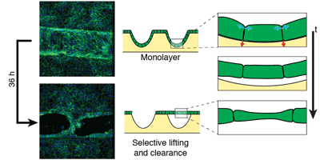
- A strategy for tissue self-organization that is robust to cellular heterogeneity and plasticity.
A.E. Cerchiari, J.C. Garbe, N.Y. Jee, M.E. Todhunter, K.E. Broaders, D.M. Peehl, T.A. Desai, M.A. LaBarge, M. Thomson, Z.J. Gartner. Proc. Natl. Acad. Sci., 2015, 112, 2287-2292.
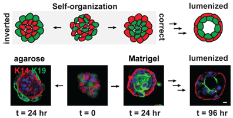
- Exclusive formation of monovalent quantum dot imaging probes by steric exclusion.
J. Farlow, D. Seo, K.E. Broaders, M. Taylor, R.D. Vale, Y.W. Jun, Z.J. Gartner. Nat. Methods, 2013, 10, 1203-1205.
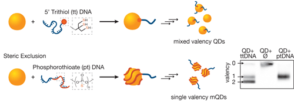
- Chemically programmed cell adhesion with membrane-anchored oligonucleotides.
N.S. Selden, M.E. Todhunter, N.Y. Jee, J.S. Liu, K.E. Broaders, Z.J. Gartner. J. Am. Chem. Soc., 2012, 134, 765-768.
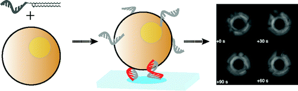
- Mannosylated Dextran Nanoparticles: a pH-Sensitive System Engineered for Immunomodulation through Mannose Targeting.
L. Cui, J.A. Cohen, K.E. Broaders, T.T. Beaudette, J.M.J. Fréchet. Bioconjugate Chem., 2011, 22, 949-957.
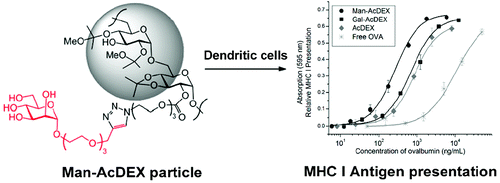
- A Biocompatible Oxidation-Triggered Carrier Polymer with Potential in Therapeutics
K.E. Broaders, S. Grandhe, and J.M.J. Fréchet. J. Am. Chem. Soc., 2011, 133, 756-758.
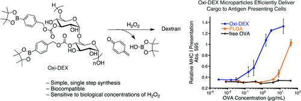
- Acid-Degradable Solid-Walled Microcapsules as Environmentally Responsive Burst-release Carriers
K.E. Broaders, S.J. Pastine, S. Grandhe, J.M.J. Fréchet. Chem. Commun., 2011, 47, 665-667.
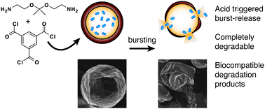
- In Vitro Analysis of Acetalated Dextran Microparticles as a Potent Delivery Platform for Vaccine Adjuvants
E.M. Bachelder, T.T. Beaudette, K.E. Broaders, J.M.J. Fréchet, M.T. Albrecht, A.J. Mateczun, K.M. Ainslie, J.T. Pesce, A.M. Keane-Myers. Mol. Pharmaceutics, 2010, 7, 826-835.
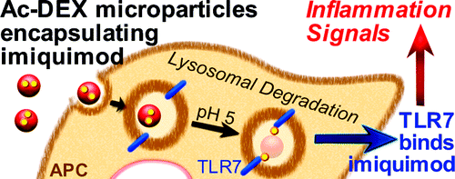
- Acetal-Modified Dextran Microparticles with Controlled Degradation Kinetics and Surface Functionality for Gene Delivery in Phagocytic and Non-Phagocytic Cells.
J.A. Cohen, T.T. Beaudette, J.L. Cohen, K.E. Broaders, E.M. Bachelder, J.M.J. Fréchet. Adv. Mater., 2010, 22, 3593-3597.
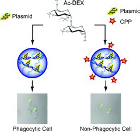
- Chemoselective Ligation in the Functionalization of Polysaccharide-Based Particles.
T.T. Beaudette, J.A. Cohen, E.M. Bachelder, K.E. Broaders, J.L. Cohen, E.G. Engleman, and J.M.J. Fréchet. J. Am. Chem. Soc., 2009, 131, 10360-10361.
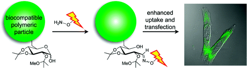
- In Vivo Studies on the Effect of Co-Encapsulation of CpG DNA and Antigen in Acid-Degradable Microparticle Vaccines.
T.T. Beaudette, E.M. Bachelder, J.A. Cohen, A.C. Obermeyer, K.E. Broaders, J.M.J. Fréchet, E.-S. Kang, I. Mende, W.W. Tseng, M.G. Davidson, and E.G. Engleman. Mol. Pharmaceutics, 2009, 6, 1160-1169.
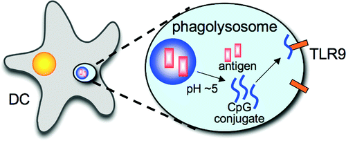
- Acetalated dextran is a chemically and biologically tunable material for particulate immunotherapy.
K.E. Broaders, J.A. Cohen, T.T. Beaudette, E.M. Bachelder, and J.M.J. Fréchet. Proc. Natl. Acad. Sci., 2009, 106, 5497-5502.
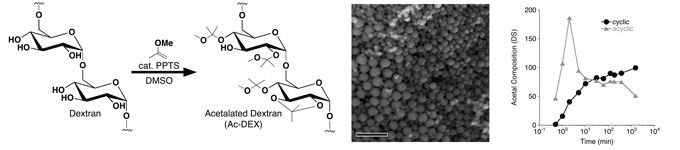
- Acid-Degradable Polyurethane Particles for Protein-Based Vaccines: Biological Evaluation and in Vitro Analysis of Particle Degradation Products.
E.M. Bachelder, T.T. Beaudette, K.E. Broaders, S.E. Paramonov, J. Dashe, and J.M.J. Fréchet. Mol. Pharmaceutics, 2008, 5, 876-884.
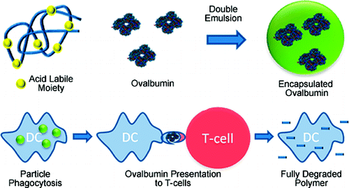
- Acetal-Derivatized Dextran: An Acid-Responsive Biodegradable Material for Therapeutic Applications.
E.M. Bachelder, T.T. Beaudette, K.E. Broaders, and J.M.J. Fréchet. J. Am. Chem. Soc., 2008, 130, 10494-10495.
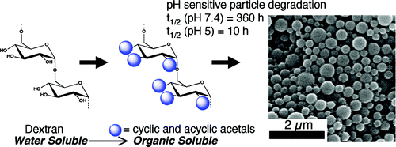